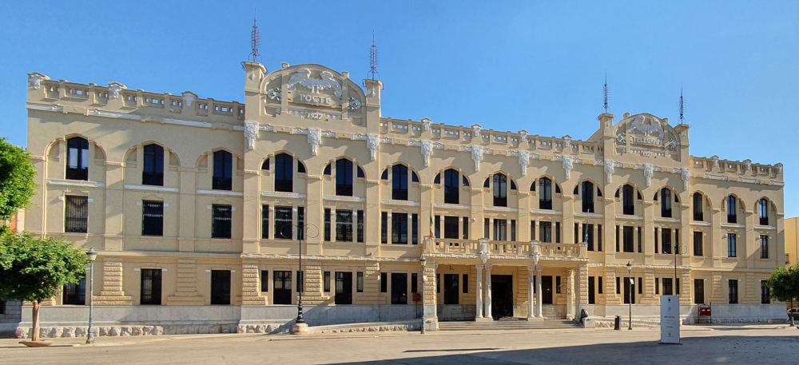
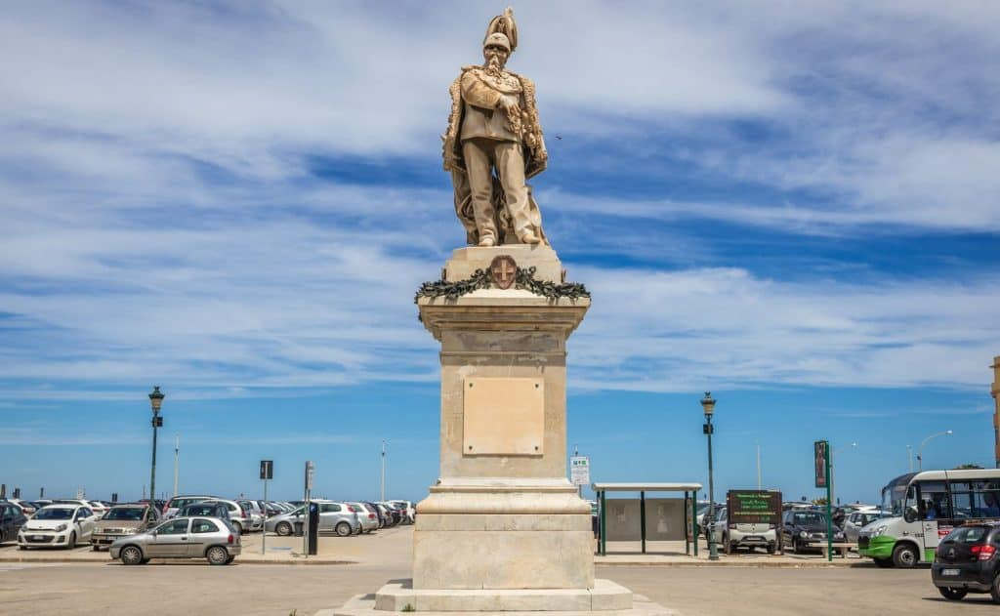

Piazza Vittorio Emanuele II a Trapani funge da cerniera tra il centro storico e la città moderna. Nata nell'Ottocento come grande spazio di rappresentanza, la piazza riflette l'ambizione di una città che, dopo l'Unità d'Italia, voleva aprirsi e respirare oltre le sue antiche mura. Originariamente concepita come un ampio foro d'ingresso, oggi si presenta come un arioso giardino monumentale dove l'architettura civile del Ventennio si mescola con sculture celebrative, mantenendo il ruolo di punto d'incontro fondamentale per la vita sociale dei trapanesi.

Cosa Visitare

Palazzo dei Giganti: situata al centro della grande vasca circolare, è il cuore della
piazza; la statua bronzea celebra la forza del mare, elemento vitale per l'economia e
la storia della città.

Monumento a Vittorio Emanuele II: sla maestosa statua dedicata al sovrano, posta
su un alto basamento, che definisce l'identità risorgimentale dello spazio urbano.

Fontana del Tritone: situata al centro della grande vasca circolare, è il cuore della
piazza; la statua bronzea celebra la forza del mare, elemento vitale per l'economia e
la storia della città.